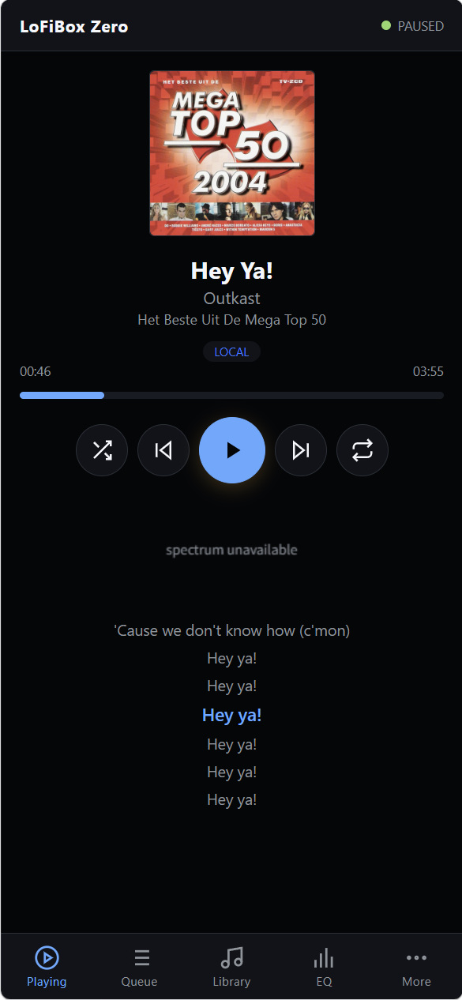
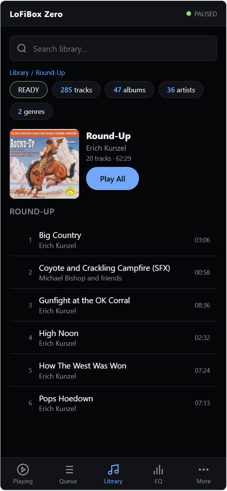

WebUI
浏览器远程控制
WebUI 是 GUI、TUI、CLI 共用 runtime 的浏览器投影。 它已经内置进 0.2.0 预览包，覆盖 Now Playing、Queue、Library、Sources、EQ、Settings 和 Diagnostics，不需要前端构建步骤。

启动 WebUI
lofibox --webui
lofibox --webui --webui-bind 127.0.0.1 --webui-port 8765
LOFIBOX_WEBUI=1 \
LOFIBOX_WEBUI_BIND=127.0.0.1 \
LOFIBOX_WEBUI_PORT=8765 \
lofibox
默认端口是 8765。本机控制建议绑定 127.0.0.1；只在可信局域网里绑定到 LAN 地址。
WebUI 只发送受控 runtime command，不暴露明文凭据。
Runtime 传输
浏览器从内置静态服务加载单文件应用。
实时更新通过 /api/runtime/events WebSocket 下发，并以 /api/runtime/snapshot polling 兜底。
修改动作通过 POST /api/runtime/commands 提交，所以播放、队列、EQ、Remix 都仍然走同一条 runtime command bus。
页面
| 页面 | 用途 |
|---|---|
| Now Playing | 播放状态、进度、频谱、控制按钮、来源标签和 Remix badge。 |
| Queue | 查看和控制当前 runtime queue。 |
| Library | 浏览媒体库投影，把可播放项目加入队列。 |
| Sources | 读取远程源状态和连接信息。 |
| EQ | 控制 10 段 EQ 与 preset 状态。 |
| Settings | 查看 runtime settings，并切换 Remix 音效。 |
| Diagnostics | 查看 runtime 健康状态和传输状态。 |
快捷键
| 按键 | 动作 |
|---|---|
| Space | 播放/暂停。 |
| ArrowLeft | 上一首。 |
| ArrowRight | 下一首。 |
| R / r | 切换内置 Remix 音效：OFF、Radio、Tape、Vinyl。 |

打包说明：
apt 发布 workflow 会用
-DLOFIBOX_BUILD_WEBUI=ON 打开 WebUI，所以 0.2.0 预览包包含这个界面。